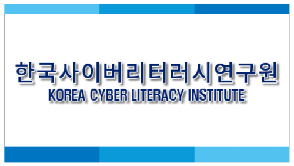
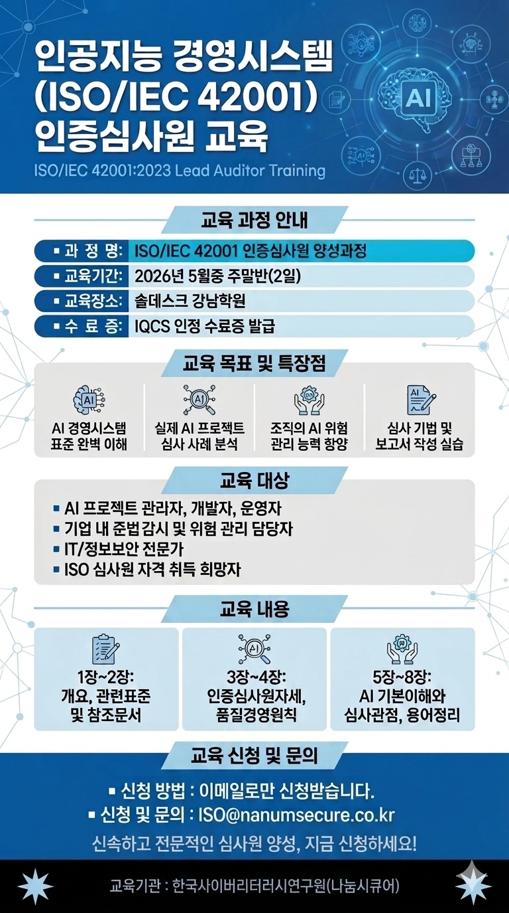

표준과 기술을 정확하게
용어와 요구사항을 맥락 속에서 읽고, 새로운 기술의 가능성과 한계를 함께 살핍니다.
Korea Cyber Literacy Institute
국제표준을 이해하고, AI를 책임 있게 활용하며, 현장에서 실행할 역량을 기릅니다. 한국사이버리터러시연구원이 교육과 지식정보로 함께합니다.
국제표준의 언어를
현장의 실행 역량으로
전환합니다.
About KCLI
한국사이버리터러시연구원은 ISO 교육·심사, AI·사이버 리터러시, 플랫폼·지식정보를 주요 영역으로 삼고 있습니다. 표준과 기술을 이해하는 데서 나아가, 조직의 업무에 적용할 수 있는 판단력과 전문성을 지향합니다.
용어와 요구사항을 맥락 속에서 읽고, 새로운 기술의 가능성과 한계를 함께 살핍니다.
정보의 출처와 AI 결과를 점검하고, 위험과 책임을 고려해 활용 여부를 판단합니다.
사례와 실습을 통해 배운 내용을 정리하고, 현장에서 적용할 기준을 구체화합니다.

Core Business
전문가 양성과 조직의 표준 대응, 디지털 지식의 실제 적용을 하나의 역량 체계로 연결합니다.
ISO 42001을 비롯한 국제표준 인증심사원 양성교육과 인증심사 전문역량을 제공합니다.
EDUCATION & AUDITAI 경영시스템의 요구사항과 위험관리, 거버넌스를 이해하고 책임 있게 적용하도록 돕습니다.
AI GOVERNANCE지식산업센터 관리 소프트웨어와 지식기반 정보 공유·아카데미 사업을 추진합니다.
PLATFORM & KNOWLEDGEProfessional Education
AI 경영시스템의 요구사항을 이해하고, 사례 분석과 워크숍을 통해 심사 관점을 익히는 전문가 교육과정입니다.

ISO/IEC 42001:2023 LEAD AUDITOR TRAINING
표준 요구사항을 체계적으로 해설하고, 사례 기반 워크숍과 필기평가를 통해 현장 적용력을 높입니다.
개설 일정·교육비·신청 가능 여부는 문의 시 안내받으실 수 있습니다. 아래 교육성과는 과거 운영 기록입니다.
일정·교육비 문의 →ISO/IEC 42001의 목적과 구조, 연계 표준 및 핵심 참조체계를 이해합니다.
01인증심사 프로세스와 판정 포인트, 심사 수행의 기본 원칙을 학습합니다.
02AI 시스템의 특성과 위험을 심사 관점으로 분석하고 보고서 작성까지 실습합니다.
03Work with KCLI
교육이나 협력을 검토하신다면 대상, 업무 현안, 기대 결과를 알려주세요. 아래 순서로 요청 범위를 정리하여 상담하실 수 있습니다.
참여 대상과 현재의 고민, 교육·협력이 필요한 이유를 정리합니다.
대상 · 업무 현안관련 표준과 주제, 필요한 수준, 진행 가능한 방식을 확인합니다.
주제 · 난이도 · 방식교육 내용과 사례, 일정, 기대하는 결과물을 협의합니다.
내용 · 일정 · 결과물학습한 내용을 실제 업무에 연결할 방법과 추가 과제를 살핍니다.
적용 기준 · 다음 과제Training Records
제1회 ISO/IEC 42001 인증심사원 교육과정의 운영 결과와 제공 자료를 확인할 수 있습니다.
About IQCS
IQCS(International Qualification Certification Service)는 연수기관 지정·사후평가, ISO 심사원 등록관리, 국제자격 운영을 통해 산업 현장에 필요한 전문인력의 역량을 지원합니다.
INTERNATIONAL QUALIFICATION
CERTIFICATION SERVICE
교육부터 자격 등록과 사후관리까지, 국제표준 전문인력의 성장 경로를 잇는 자격 인증 전문기관입니다.
IQCS 공식 홈페이지 ↗경영시스템 심사원 양성 연수기관을 지정하고 교육과정 운영의 적합성을 사후 평가합니다.
자격과 적격성을 갖춘 심사자원을 등록하고 지속적인 사후관리로 전문성 향상을 지원합니다.
ISO/IEC 17024 기반으로 산업·서비스 현장에 필요한 개인자격을 설계하고 운영합니다.
LEAD AUDITOR STANDARDS
제공된 과정 자료에는 품질·환경·안전·정보보안·준법 등 25개 ISO 심사원 규격이 안내되어 있습니다.
※ IQCS 소개 내용은 제공된 회사·교육자료와 IQCS 공식 홈페이지를 바탕으로 간략히 정리했습니다.
KCLI × IQCS
제공된 IQCS 지정서에는 한국사이버리터러시연구원이 ISO 9001·14001·45001·27001·27701·22301·42001 및 ESG Auditor 교육·시험 수행기관으로 기재되어 있습니다.
ISO 교육·심사 전문역량, AI·사이버 리터러시, 플랫폼·지식정보를 주요 영역으로 합니다. 국제표준과 디지털 기술의 이해를 실제 업무 역량으로 연결하는 것을 지향합니다.
AI 프로젝트, 준법, 위험관리, 정보보안 담당자와 심사원 희망자를 위한 과정입니다. 경력과 학습 목적에 따른 참여 조건은 신청 전에 문의해 주세요.
교육 수료와 심사원 자격 등록은 구분됩니다. 수료 후 등록에 필요한 경력·심사 경험 등 요건과 절차는 해당 자격 등록기관의 최신 기준을 확인하셔야 합니다.
홈페이지에 표시된 2026년 5월 과정은 지난 교육 기록입니다. 다음 개설 일정, 교육비, 접수 여부, 교육 장소와 방식은 전화 또는 이메일로 문의해 주세요.
가능합니다. 희망 주제, 참여 대상·인원, 일정과 해결하고 싶은 업무 과제를 보내주시면 제공 가능 범위와 진행 조건을 협의할 수 있습니다.
이 홈페이지는 교육 안내와 상담 연결을 제공합니다. 이메일 작성이나 전화 연결만으로 신청·접수가 완료되지는 않으며, 담당자의 안내를 통해 확정해 주세요.
Connect with KCLI
메일 앱에서 내용을 확인한 후 직접 보내주세요. 현재 화면에서는 문의가 전송되지 않습니다.
서울특별시 금천구 디지털로 178, 가산 퍼블릭 A동 1031호